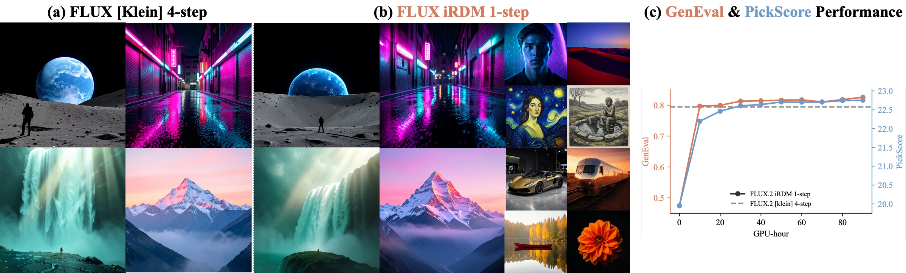
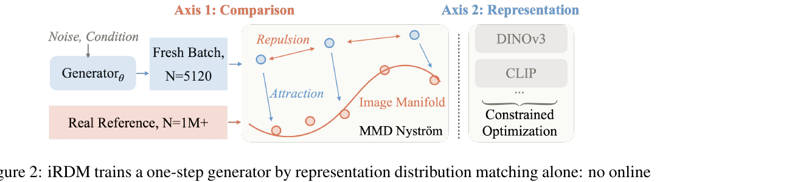
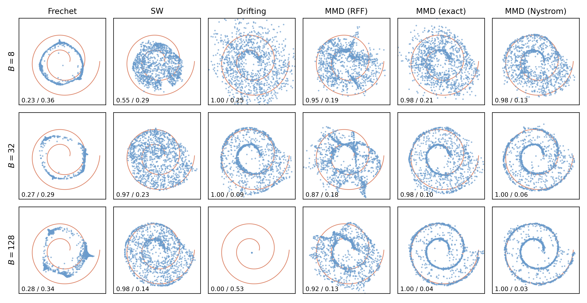
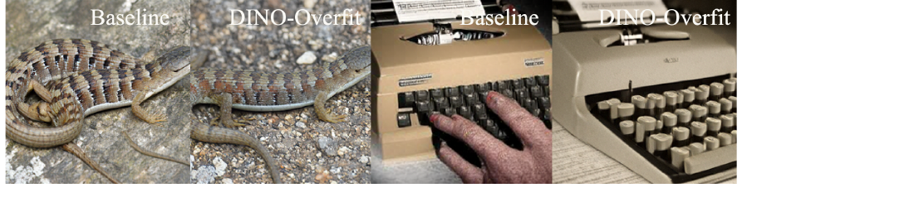

Representation Distribution Matching for One-Step Visual Generation

一句话
生成 = 分布匹配。把「无教师一步生成」这条线抽象成 RDM 范式, 拆成两根轴, 逐轴做受控实验, 定位每个方法的天花板到某个具体设计选择。
轴一 · 怎么比
用平方 MMD:批内精确排斥 + 对全量数据的 Nyström 冻结吸引 (eq.3), 大而新鲜的生成批 (梯度缓存吃下显存), 条件任务上匹配图文联合律。
轴二 · 在哪比
单个编码器必被刷穿。对一整排 (10 训 + 4 留出) 冻结编码器匹配, 用比例 Lagrangian 控制器把最难满足的编码器加权最重, 满足了就退出。
指标
SW_r14:14 个编码器上的 Sliced-Wasserstein 比值, 真实数据按定义 =1, 与训练损失不共享任何机理, 抗刷分。iRDM 1.30 一步 SOTA。
RDM
Representation Distribution Matching。在冻结预训练编码器的特征空间里, 直接把生成分布对齐真实分布——不用在线教师、不用对抗、不用模拟轨迹。
MMD
Maximum Mean Discrepancy, 最大平均差异。用一个正定核度量两个分布的距离, 对特征核 (如高斯) 当且仅当两分布相等时为 0。
Nyström
用少量「地标点」(landmarks) 低秩近似核矩阵的经典手法。这里用 4096 个地标把 128 万张图的吸引项压成一个冻结、零方差的参考。
pushforward ϕ∗
推前测度:把图像上的分布 p 通过编码器 ϕ 映到特征空间得到的分布 ϕ∗p。RDM 比的就是 ϕ∗pθ 和 ϕ∗p_data。
median heuristic
定高斯核带宽 σ 的常用启发式:取特征两两距离的中位数。每个编码器一个 σ, 固定不调。
Sliced-Wasserstein
把高维最优传输距离沿大量随机一维投影求平均的可算版本。比 Fréchet / MMD 更难被刷, 用作评测而非训练。
PID-Lagrangian
把「每个编码器都要达到真实地板」写成约束优化, 用比例 (P) 控制动态调 Lagrange 乘子 (=编码器权重) 的方案。
gradient caching
批内损失不可拆成逐样本项时, 分两趟前向、把中间梯度缓存下来, 用一个 micro-batch 的显存算出整批的精确梯度。
1. 出发点 (Motivation)
生成建模本质就是分布匹配。 我们想要一个生成器, 它的输出分布匹配数据分布——而且我们评判「匹配得好不好」用的本来就是两者表征分布之间的距离 (FID 就是这么定义的)。扩散和流模型只是隐式地追这个目标:学着反转一个加噪过程, 推理时模拟很多步去噪, 把噪声搬到数据上。每一步去噪都是一次网络前向, 所以贵。
有一条显式的新路线:直接在一个冻结预训练编码器的特征空间里, 把生成分布和真实分布对上, 一次网络前向出图——没有在线教师, 没有对抗, 没有要模拟的轨迹。作者把这条路线命名为 RDM (Representation Distribution Matching)。
作者的核心洞察是:近期几个一步生成器 (drifting field, Fréchet-distance loss, Sinkhorn flow) 其实是同一个范式的不同实例, 只差两根轴。
- 轴一 · comparison (怎么比):用哪个差异度量 D 给两边特征律打分, 怎么从有限样本估计它, 每一边拿什么当参考。
- drifting field (Deng et al., 2026) 在每个批内算两两核力, 参考也从同一个批里读;
- Fréchet-distance loss (Yang et al., 2026) 只留前两阶矩, 在全量数据上预先算好。
- 轴二 · representation (在哪比):用哪些冻结编码器定义特征空间, 多个怎么加权。这里所有方法都收敛到同一个默认:少数几个编码器、固定权重。
问题在于:现有方法把这些选择捆在一起定死, 于是分不清到底是哪个选择带来了质量。 作者的做法是一次只变一根轴, 受控实验推翻了当前实践里几条隐含假设:
- 经典 MMD 从来不弱, 只是估计得烂。 十年前 MMD 被判定「训不出有竞争力的生成器」。但好的估计需要一个结构化的特征空间 + 每边足够多的样本, 而且两边要区别对待。参考是提前定死、永不移动的, 所以用全部——把整个 128 万张训练集压成一个冻结的 Nyström 参考。
- 生成批是真正的操作变量, 最优点远超常规。 生成侧每步都在动, 必须每步重新采样;批越大估计越准但更新次数越少, 最优点在 2048 以上, 比常规大一个数量级, 靠梯度缓存吃下显存。
- 任何单个编码器都能被刷穿。 生成器会对它训练所针对的那个编码器过拟合——在那个编码器自己的分数上打赢真实数据, 图却肉眼可见地假。解法不是找个更好的编码器, 而是谁都别单靠:对一整排编码器匹配, 且用约束优化保持它们平衡。
2. 方法 (Method)
一个一步生成器 \(g_\theta\) 把先验 \(z \sim p_z\) 一次前向映成图像, 输出律 \(p_\theta\)。给定冻结编码器 \(\phi\) 把图像送成特征 \(\phi(x)\in\mathbb{R}^D\), RDM 对齐生成与真实的特征律:
—— 翻译: 别在图像像素上比, 在编码器特征空间里比两个分布的距离。约束输出分布而非逐样本的去噪轨迹, 使得生成器「一次前向」是天生的, 不是硬凑出来的;同一目标也能把一个少步采样器 (把它最终输出当作 $g_\theta$) 后训练成一步。
每个 eq.(1) 的实例由两根轴定死。下面逐个拆。

2.1 轴一之核:MMD 与它的估计器 (eq. 2–3)
正定核 \(k\) 在特征空间上定义平方 MMD:
—— 翻译: 三项分别是「P 内部有多聚」「P 与 Q 有多像」「Q 内部有多聚」。对高斯这类特征核 (characteristic kernel), 当且仅当 P=Q 时这个量为 0——所以最小化它就是逼两分布相等。作者用高斯核 $k(x,y)=\exp(-\|x-y\|_2^2/2\sigma_\phi^2)$ 直接作用在原始编码器嵌入上, 带宽 $\sigma_\phi$ 每编码器用中位数启发式定死。
关键在于:生成器优化的是有限样本估计, 而估计器决定了它的开销、方差、以及可被利用的盲点。 写 \(g_i=\phi(g_\theta(z_i))\) 为一批大小 \(B\) 的生成特征。eq.(2) 三项里:数据项对 \(\theta\) 是常数, 丢掉;交叉项把生成特征吸向数据;生成项把它们相互排斥——这是唯一阻止「塌缩到最密模态」的力。两个诉求相反, 所以两项分开估计:
—— 翻译: 排斥项只在批内跑, $B\times B$ 核和很便宜, 所以留精确, 一个编码器一个矩阵。吸引项要跟全训练集比, 若每步重采样 (标准两样本估计的做法) 会注入参考噪声, 带宽越小噪声越大——所以算一次就冻死:用 Nyström 核均值嵌入, $m{=}4096$ 个由 k-means 放的地标 $\ell_j$, $\psi(x)=K_{mm}^{-1/2}(k(x,\ell_1),\dots,k(x,\ell_m))^\top$, 参考均值 $\bar\mu_\phi=\frac1n\sum_t\psi(r_t)$ 在全部 $n{=}128$ 万张图上预先算好并冻结。每步以 $O(Bm)$ 把批拉向这个零方差的摘要, 相比编码器前向可忽略。
这段公式几乎逐字落到代码里。iRDM 训练损失就是「精确排斥 − 2×Nyström 吸引 + 常数」:
repo/rdm/compare/mmd_nystrom.py:29-42 — iRDM 的操作性目标 (eq.3)
def mmd_nystrom_loss(feat_g, Z, Z2, alpha, sigma, k_rr_const=0.0, gen_chunk=8192):
"""Biased MMD^2 = exact within-batch repulsion - 2 * Nystrom attraction + const k_rr."""
g = feat_g.float()
gamma = gamma_from_sigma(sigma) # gamma = 1/(2 sigma^2)
k_gg = self_kernel_mean(g, gamma, gen_chunk) # 排斥: (1/N^2) Σ_{i,j} k(g_i,g_j)
k_gr = nystrom_attraction(g, Z, Z2, alpha, gamma) # 吸引: mean_i k(g_i,Z)·alpha
return k_gg - 2.0 * k_gr + k_rr_const # k_rr 只定损失值, 无梯度
排斥项是有偏估计:对角 \(i{=}j\) 保留, 除以 \(B^2\)。它无参考、恒精确, 且可分块以配合梯度缓存:
repo/rdm/compare/kernels.py:40-59 — 批内精确排斥 (唯一防塌缩的力)
def self_kernel_mean(g, gamma, chunk=8192):
"""BIASED within-batch self-kernel mean (1/N^2) Σ_{i,i'} k(g_i, g_i')."""
n = g.shape[0]
def block(gg, lo, hi):
return gaussian_gram(gg[lo:hi], gg, gamma).sum()
acc = g.new_zeros(())
for lo in range(0, n, chunk): # 分块 + 逐块 checkpoint,
hi = min(lo + chunk, n) # 峰值中间矩阵仅 O(chunk*N)
acc = acc + checkpoint.checkpoint(block, g, lo, hi, use_reentrant=False)
return acc / (n * n)
吸引项在生产训练里用的是预算好的系数向量 \(\alpha = K_{ZZ}^{-1}\bar\mu\)——这样只要一次 \(B\times m\) 的核乘法, 零方差、无需每步重建参考:
repo/rdm/compare/nystrom.py:29-40 — Nyström 吸引 (对冻结全量参考)
def nystrom_attraction(g, Z, Z2, alpha, gamma):
"""Nystrom attraction (cross-kernel mean) k_gr = mean_i k(g_i, Z) · alpha."""
d2 = (g.pow(2).sum(1)[:, None] + Z2[None, :] - 2.0 * (g @ Z.T)).clamp_min(0)
return (torch.exp(-gamma * d2) @ alpha).mean()
为什么是 MMD + Nyström, 而不是别的? 作者用一个「螺旋线诊断」给出直观证据 (Fig. 3):把一条两圈螺旋线用固定正交映射埋进 \(\mathbb{R}^{64}\) (模拟真实编码器把数据放在高维里的一条薄流形上), 同一个 MLP 生成器在各目标下等预算训练, 扫批大小 \(B\in\{8,32,128\}\)。

每个替代距离都放弃了上面某个优势:Fréchet 把每边压成两阶矩, 会「匹配饱和了但图仍瑕疵」;sliced-Wasserstein 靠投影内排序, 只能拿批比批 (而非比全量真实分布);drifting field 是同一 MMD 梯度的逐粒子归一化形式, 小批更稳但批一大就退化回普通 MMD, 其重采样的每批参考把它锁死在小批。至于吸引项, Nyström 地标胜过随机 Fourier 特征 (RFF):地标基是数据相关的、正好铺在真实点上、在「生成实际发生的地方」精确;而全局余弦把容量花在流形几乎不占的环境空间上, 留下的未解析方向会被优化压力下的生成器钻空子。
2.2 轴一之续:大批 + 联合律 (eq. 4)
生成侧要大而新鲜。 数据侧一次冻死后, 生成分布是唯一还在动的量, 且每步都动, 所以必须每步重采样——用 EMA 队列这种陈旧缓冲 (如 Yang et al. 2026) 会把梯度带偏成 off-policy。一批新鲜样本让它的大小 \(N\) 成为操作变量:\(N\) 越大方差越低, 但定算力预算下更新次数越少。大批本来被显存卡死, 梯度缓存 (Gao et al. 2021) 分块累积精确的全批梯度、只花一块的显存, 把这道墙拆了。在等 wall-clock 预算下扫 \(N\) (学习率按 \(\sqrt N\) 缩放), 质量随 \(N\) 爬升到一个宽的最优区:ImageNet 取 \(N{=}5120\), FLUX 后训练取更大的 \(N{=}10240\)。
条件任务要匹配联合律, 不是边缘律。 一个带提示词的生成器可以满足图像边缘分布、却漂离提示词 (用对齐换来的真实感)。作者改为匹配联合律:配一个冻结文本编码器 \(\tau\), 耦合特征 \(\Phi(x,c)=\phi(x)\oplus\tau(c)\),
—— 翻译: 参考对把每张图和它的caption耦在一起, 生成对把每个输出和产生它的提示词耦在一起;估计器不变, 地标现在指向图文对。在核下, 一张生成图被拉向那些caption 与其提示词相近的参考图——于是「提示词保真」被塞进了匹配目标里。
代码里, 联合耦合只是把图像特征和 (冻结的、缩放过的) 文本特征拼接。核对拼接会分解成图核×文核, 所以文本权重由缩放系数 \(\beta\) 决定, 且梯度只流过图像分支:
repo/rdm/representation/joint_feature.py:41-51 — 图文联合耦合 (eq.4)
def couple(phi, tau_rows, beta):
"""Build Phi = [phi | beta * tau] for a batch (the joint coupling).
phi: (B, d_img) 图像特征 (带梯度); tau_rows: (B, d_txt) 冻结文本特征 (无梯度)。"""
return torch.cat([phi, beta * tau_rows], dim=1)
2.3 轴二:一个编码器永远不够
特征距离也是真实感怎么被打分的方式:FID 及其后裔把真实感约化成「单个编码器下的分布差」, 当作人类判断的代理。这个代理很脆。 作者做了最狠的反例:拿语义结构远强于 Inception/ConvNeXt 的 DINOv2 单独匹配, 起点 \(\text{SW}_{\text{dino}}{=}1.81\) (离真实很远), 训 1000 步后压到 1.01——几乎等于真实验证集的地板 1.00。按 DINOv2 的账本, 生成器已经跟真实一样近了。 但图说了不算数:

受约束优化对付一整排编码器。 单个编码器只给伪度量, 但一排多样编码器的组合核是特征核, 只在真实分布处消失。作者对 14 个面板编码器中的 10 个训练 (选那些「以不同方式失败」的冻结骨干), 另 4 个留出。权重决定这份多样性能否存活:固定权重下, 优化器会挑最容易的编码器把总和压下去。作者把加权写成约束优化——每个编码器都被要求达到它的真实验证地板 \(b_\phi\), 权重就是 Lagrange 乘子, 由比例控制在一个满足门下设定 (Stooke et al. 2020 的 PID-Lagrangian 的 P 项):
—— 翻译: 编码器的「超额」$e_\phi$ = 当前分 − 地板。达标或低于地板的直接退出 (权重归 0, 天然防过拟合), 违反者通过 softmax 分享一个固定预算 $\Sigma{=}10$——离真实最远的加权最重。全部满足时权重全消, 是个自然的终止态。这就是「短板法则」:一只桶只装到最短那块板的高度, 看图的人也只盯最扎眼的那处瑕疵。
代码里, step() 拿每编码器的实时分数, 违反者做 softmax 分配固定预算, 达标者清零:
repo/rdm/train/pid_lagrangian.py:71-83 — 门控 softmax 权重分配 (违反者分预算, 达标者归零)
if self.softmax_mode:
active = [n for n in z if z[n] > 0.0] # 只留违反者
for n in z:
self.lambdas[n] = 0.0 # 满足 -> 0 (防过拟合)
if active:
zs = [z[n] for n in active]
t_eff = max(self.temperature * (sum(zs) / len(zs)), 1e-12) # 自适应温度
z_max = max(zs)
exp_z = [math.exp((v - z_max) / t_eff) for v in zs]
denom = sum(exp_z)
for n, e in zip(active, exp_z):
self.lambdas[n] = float(self.total_lambda * e / denom) # 分享预算 Σ
2.4 抗刷分的评测:SW_r14 (eq. 5)
评测也需要同样的保护, 且绝不能塌回训练损失。作者沿用「每编码器比值取面板均值」的构造, 但把 Fréchet 换成 Sliced-Wasserstein (一个正经的最优传输距离, 与训练用的 MMD 不共享估计器):
—— 翻译: 分子是「生成 vs 训练」的 SW 距离, 分母是「验证 vs 训练」的 SW 地板 (两次独立真实抽样之间不可约的距离)。所以 $r_e{=}1$ 意味着生成跟一次新鲜真实抽样一样近, 越低越接近真实。$k{=}14$ 时真实验证数据按构造得 1, 其中 4 个编码器留出作泛化检查。因为从不针对它训练, 涨分就排除了刷分。
repo/rdm/eval/sw_r14.py:22-33 — 每编码器 SW 比值 (eq.5), 与训练损失不共享机理
def sw_ratio_per_encoder(gen_feats, train_feats, val_feats, n_proj=1024, p=2, seed=0):
"""Per-encoder SW ratio SW(gen,train) / SW(val,train) for each shared encoder."""
ratios = {}
for name in gen_feats:
n = min(gen_feats[name].shape[0], train_feats[name].shape[0], val_feats[name].shape[0])
g, tr, v = gen_feats[name][:n], train_feats[name][:n], val_feats[name][:n]
floor = sliced_wasserstein(v, tr, n_proj, p, seed=seed) # 真实-真实地板
sw = sliced_wasserstein(g, tr, n_proj, p, seed=seed) # 生成-真实
ratios[name] = float(sw / floor) if floor > 0 else float("nan")
return ratios
合成 iRDM: 精确批内排斥 + 对全量数据一次冻结的 Nyström 吸引, 大而新鲜的生成批, 条件任务上的图文联合律, 以及一排由约束优化平衡的多样编码器。参考 \(\bar\mu_\phi\) 每编码器预算一次;每步再抽新鲜批、一次前向生成、带梯度缓存编码、在比例 Lagrangian 权重下把各编码器损失求和。目标里没别的了:无在线教师、无对抗、无轨迹。
3. 实验结果 (Results)
3.1 ImageNet-256 一步生成:SW_r14 1.30 SOTA
在 ImageNet-256 上后训练已发布的 pMF-H FD-SIM 检查点 4000 步 (lr \(1.6\times10^{-6}\), \(N{=}5120\), 10 个训练编码器, 全 128 万图压成 4096 地标 Nyström 参考)。没有一个已发布生成器接近真实地板 1.0, 最强的到约 2.05。iRDM 把一步 SOTA 定在 SW_r14 1.30, 低于所有已发布模型, 在 14 个编码器中的 9 个及总和上都是最好。
| 模型 | 类型 | SW_r14 ↓ | SW†_r4 (留出) ↓ |
|---|---|---|---|
| Validation baseline (真实) | — | 1.00 | 1.00 |
| pMF-H (base) | 一步 | 4.09 | 3.63 |
| RAE-XL⋆ | 多步 | 2.43 | 2.18 |
| REPA-E SiT-XL/1⋆ | 多步 | 2.40 | 2.14 |
| pMF-H (FD-SIM)⋆ (前 SOTA) | 一步 | 2.05 | 1.98 |
| iRDM (ours)⋆ | 一步 | 1.30 | 1.54 |
它让出 5 个编码器:Inception、ConvNeXt、MAE 让给 FD-loss 模型 (那个模型正是靠刷穿单个空间在这几个上打到真实之下), DreamSim 也险败给它, 留出的 FLUX VAE 输给 MAR-H。
人类偏好 (PickScore, 从不针对它训练) 印证同一排序:
- 对起点 pMF-H FD-SIM:71.2% 匹配对被偏好 (20.61→20.96, 配对 z=30.5);
- 对近期 RAE-XL / REPA-E SiT-XL:75.7% / 73.2% 的类被偏好;
- 甚至对留出的真实照片:63.6% 被偏好——据作者所知, 是第一个通过真实照片 PickScore 的一步生成器。
3.2 文生图:一步 FLUX.2 反超四步教师, 90 GPU-hours
从四步 FLUX.2 [klein] 后训练成一步 (联合图文目标, \(N{=}10240\), lr \(2.83\times10^{-6}\), 仅 180 步 ≈ 90 H200 GPU-hours)。匹配参考一次性从四步教师采集后冻死 (约 30 万张 PickScore 排序的 COCO 渲染 + 检测器验证的 GenEval 正确样本), 所以后训练不查询任何在线教师。
| 方法 | Two Obj. | Colors | Position | Color Attr. | Overall | PickScore |
|---|---|---|---|---|---|---|
| FLUX.2 [klein] (4 步) | 0.904 | 0.880 | 0.575 | 0.623 | 0.794 | 22.58 |
| Untrained (1 步) | 0.323 | 0.673 | 0.225 | 0.128 | 0.474 | 19.95 |
| DMD2 (1 步) | 0.894 | 0.864 | 0.603 | 0.660 | 0.804 | 22.36 |
| iRDM (1 步, 边缘) | 0.899 | 0.910 | 0.638 | 0.608 | 0.801 | 22.70 |
| iRDM (1 步, 联合) | 0.924 | 0.923 | 0.650 | 0.708 | 0.826 | 22.76 |
一步模型在 GenEval 总分 0.826 反超四步版 0.794, PickScore 22.76 也高于 22.58;强于同教师蒸馏出的 DMD2 (0.804 / 22.36)。联合 vs 边缘的对照是关键:边缘变体 (丢掉 caption) 总分 0.801, 差距集中在最吃图文对齐的类——two-object (0.924 vs 0.899) 和属性绑定 (0.708 vs 0.608);而几乎不吃耦合的 single-object 基本不变。匹配联合律而非图像边缘律, 正是「提示词保真」进入目标的原因。
3.3 三个把设计选择钉死的消融
训练距离 (Table 4) —— 固定其余配方, 只翻每步距离, 各从同一 pMF-H 起点、对单个 DINOv2 微调 100 步, 用两个中立第三方距离评。一个排序在两个评测上都成立:
三个 kernel-MMD 估计器占顶, 矩匹配 (Fréchet) 其次, sliced-Wasserstein 再次, drifting 力场即便在学习率扫描的最佳点也最弱。两个对照证实读法:精确全两两 MMD 并不打赢它的 Nyström 近似 (低秩交叉项梯度更平滑), 且在某距离上训练并不能在同一距离上占便宜 (SW 训练的臂在 SW 评测上被每个 MMD 臂甚至矩匹配打败)。这就是为什么 iRDM 用 MMD-Nyström 训、却用独立的 SW 评。
受约束 vs 均匀加权 (Table 3) —— 门控比例控制器把预算倒向最差的编码器 (PE-Core), 门掉三个已达标的:SW_r14 略胜 (1.88 vs 1.90), 而最差编码器决定性改善 (3.49 vs 4.06, 起点 4.83)——几乎是均匀加权改善量的两倍。
生成批 \(N\) —— 等 wall-clock 下质量随 \(N\) 爬升到宽最优区;最小批被噪声主导、即便更多优化步也会退步。
4. 实现细节 (Implementation)
-
梯度缓存的正确性来自「批内损失不可拆」这一事实 (
repo/rdm/train/grad_caching.py:1-19)。批内排斥对全 \(N\times N\) 对求平均, 损失不分解成逐样本项, 所以朴素梯度累积是错的。GradCache 三步走:Pass 1 无梯度生成+编码全部块 → 缓存 detach 特征 \(F\);Middle 对 \(L(F)\) 关于 \(F\) 反传一次 (小核图) → 缓存 \(G=dL/dF\);Pass 2 逐块重编码、用代理 \(\sum(\text{feat}\cdot G_{\text{slice}}.\text{detach}())\) 反传 → 精确 \(dL/d\theta\)。 -
梯度是逐元素精确的, 不是近似 (
repo/rdm/train/grad_caching.py:55-77)。在确定性 fp32 + 相等 pass1/pass2 分块下, 累积梯度与朴素全批反传逐元素相同 (仓库tests里有证明);bf16 autocast + 不等分块下退化为一阶近似 (仍是有效下降方向)。多卡:middle 反传把聚合的全局 \(dL/dF\) 路由回各 rank 的本地行, 外层 all-reduce 求均。 -
Nyström 有两种等价形式, 生产用「预算 alpha」形式 (
repo/rdm/compare/nystrom.py)。显式形式 \(\psi(x)=K_{ZZ}^{-1/2}k(x,Z)\) 是论文 eq.3 的写法 (螺旋 toy 用它);生产训练用预算好的系数 \(\alpha=K_{ZZ}^{-1}\bar\mu\), 因为 \(\psi(g)^\top\bar\mu = k(g,Z)K_{ZZ}^{-1}\mu_{Zr}=k(g,Z)\cdot\alpha\) 代数上恒等, 但 alpha 形式给出一个冻结、零方差的参考。 -
联合特征的核会分解, 所以文本权重靠一个标量 \(\beta\) 调 (
repo/rdm/representation/joint_feature.py:1-24)。\(k(\Phi,\Phi')=k_{\text{img}}\cdot k_{\text{txt}}\), 取 \(\beta=\sigma_{\text{img}}/s_{\text{txt}}\) 使文本核带宽为 \(s_{\text{txt}}\) (论文把文本分量权重设 1)。文本嵌入 \(\tau(c)\) 预算一次并冻结 (requires_grad=False), 拼接列加零参数梯度, 梯度只流过 \(\phi(x)\)。联合运行的图像带宽用「冷」的 \(0.25\times\) 中位数。 -
PID 控制器可关, 关了就回退均匀权重 (
repo/rdm/train/pid_lagrangian.py:105-110)。build_pid_lagrangian在pid_enable=False时返回None, 损失尾部退回静态权重。实时分 \(s_\phi\) 用的是优化器正在训练的同一个 Nyström-MMD (在 rollout 上算), 所以地板和分数同尺度。 -
仓库结构自证「设计空间」叙事 (
repo/rdm/compare/)。compare/目录并列摆着 6 个消融距离:mmd_nystrom.py(iRDM 主目标)、mmd_exact.py、mmd_rff.py、frechet.py、sliced_wasserstein.py、drifting.py——每个 baseline 就是「换一根轴上的一个选择」, 与论文「一次只变一根轴」的方法论一一对应。
论文 vs 代码的出入:未发现实质性偏差。核心方程 (eq.3/4/5) 都在对应文件里逐字落地, docstring 甚至写明了「有偏估计」「代数恒等」「fp32 逐元素相等」等论文正文一笔带过的细节。唯一值得标注的是排斥项的有偏选择 (含对角、除 \(B^2\)), 论文正文只写「精确批内」, 代码 docstring 才点明是 biased 估计——但这与「防塌缩的排斥力」语义一致, 不构成矛盾。
5. 批判与延伸 (Critique & Extensions)
5.1 具体不足
- 与真实仍有可测差距。 SW_r14 1.30 对地板 1.0, 最好的一步生成器仍明显短于一次新鲜真实抽样。作者自己把这列为下一个目标 (多尺度核、学习/任务专属编码器面板、更丰富的条件耦合)。
- 评测「抗刷分」是相对的, 不是绝对的。 SW_r14 与训练损失不共享机理, 所以「刷穿」被大幅抬高门槛——但它仍是一组固定编码器上的距离。如果 14 个编码器有共同盲点 (都源自类似的 ImageNet/网络监督), 一个够狠的生成器原则上仍能同时讨好它们而不真实。作者证明了单编码器可刷、没证明 14 编码器不可刷。
- Nyström 参考一次冻死 = 赌注押在预处理上。 4096 地标由 k-means 放, 参考在训练全程不动。若训练把生成分布推到地标覆盖稀疏的区域, 吸引信号会失真——这在 ImageNet 后训练 (起点已接近) 没暴露, 但从零训练或分布漂移大的任务上是未验证的风险。
- FLUX 结果是「后训练」不是「从零」。 90 GPU-hours 的惊艳数字建立在一个已经很强的四步 FLUX.2 检查点 + 一次性从教师采的 30 万参考上。它是把少步采样器压成一步的高效配方, 不是无教师从零训练一步生成器的证据 (ImageNet 那条线也是后训练 pMF-H)。
- 约束优化的收益在总分上很薄。 门控 vs 均匀在 SW_r14 上只有 1.88 vs 1.90;真正的收益在最差编码器 (3.49 vs 4.06)。作者明确不就感知质量下结论——这个聚合本身不直接量它。所以「多样编码器 + 约束优化」提升的是分布的最差角落, 对整体画质的贡献是间接论证。
5.2 交叉验证:同一范式的三个实例, 谁对谁错
RDM 的最大贡献是把三个近期一步生成器放进同一坐标系。下面对照它们在两根轴上的选择与由此得出的结论/观察的异同:
| 维度 | RDM / iRDM (本文) | Drifting field (Deng 2026) | FD-loss (Yang 2026) |
|---|---|---|---|
| 比较距离 | 平方 MMD (高斯核) | 逐粒子归一化的 MMD 梯度场 | Fréchet (前两阶矩) |
| 吸引参考 | 全量数据, Nyström 一次冻结 | 每批重建 (in-batch) | 全量数据, EMA 队列 |
| 批大小 | 大, N>2048 | 小 (被每批参考锁死) | 中 (EMA 缓冲) |
| 编码器 | 10 训 + 4 留出, 约束加权 | 少数, 固定权重 | 少数, 固定权重 |
| 自曝的软肋 | 与真实仍差 0.30 | 大批塌缩 | 可刷穿单空间到真实之下 |
一致的观察:三者都同意「在冻结编码器特征空间里直接匹配分布」能出一步生成器, 无需在线教师。都用「特征距离」作真实感代理。
矛盾与本文的裁决:(1) Drifting 声称逐粒子归一化更稳, 本文的螺旋诊断显示这只在小批成立, 大批直接塌 (Fig.3 drifting 列 B=128), 而其每批参考把它锁死在最噪的小批区。(2) FD-loss 声称能把生成器压到真实分数之下, 本文承认这是真的、但正是病征——它靠刷穿 Inception/ConvNeXt/MAE 这几个弱代理做到 (Table 1 里 iRDM 恰恰在这几个上让给 FD-loss), 换个抗刷的 SW_r14 就现原形。(3) FD-loss 用 EMA 队列估生成侧, 本文论证这会把梯度带偏成 off-policy, 改用每步新鲜大批。
分歧的可能成因:三者的「结论」差异几乎全部可追溯到估计器而非「headline idea」——这正是本文方法论的价值。Drifting 的小批锁定来自其参考构造 (每批重建), FD-loss 的可刷来自其距离构造 (两阶矩 + 单/少编码器), 而非它们各自宣称的核心创新。把三者摆到同一两轴坐标系, 才看得出「谁强在机制、谁强在调参」。
5.3 研究启发 (可迁移的套路)
老方法+对的估计器 > 新方法
MMD 被弃十年不是因为它弱, 是因为估计烂 (小批、重采样参考、坏特征空间)。在下结论「某目标不行」前, 先问「是目标不行还是我估计得烂」。很多「过时」损失可能只差一个 Nyström。
非对称估计:两项分开对待
吸引 (对固定参考) 和排斥 (批内动态) 诉求相反, 就该用不同估计器:参考端冻死求零方差, 动态端保精确。把一个损失的不同项当成同质来估, 是浪费。
单一代理必被过拟合 → 用一排 + 约束
任何单个可微评分 (单编码器 FID、单个 reward model) 都会被优化器刷穿。RL 的 reward ensemble、这里的编码器 battery 是同一招:多样 + 短板法则加权 (谁最不满足谁最重), 满足即退出防过拟合。
训练指标 ≠ 评测指标, 且不能共享机理
用 MMD 训、用 SW 评, 故意让评测与损失「不共享估计器」, 涨分才排除刷分。凡是「训什么评什么」的报告都要打问号——这在任何有可微评分的优化里都成立。
反直觉:批大小是一等超参
最优生成批在 2048 以上, 比常规大一个数量级, 且小批「更多优化步」反而更差。当估计方差主导时, 花算力在「每步更准」比「更多步」值——梯度缓存让这变得可行。
5.4 延伸阅读
本仓库里几篇相关工作可对照阅读:
- qwen-image-flash-2026 —— 少步蒸馏的另一条路:把胜负手从「目标函数」搬到「训练配方」(数据/教师/任务)。与 RDM「胜负手在估计器」形成有趣对照:一个说赢在配方, 一个说赢在估计。
- diffusion-opd-2026、flow-opd-2026 —— on-policy distillation 系列, 同样关心「一步/少步 + 无/弱教师」, 但走蒸馏轨迹而非直接分布匹配。
- self-flow-2026、asymflow-2026 —— flow 侧的快速采样, 可对照 RDM「约束输出分布使一步天生成立」的思路。
讨论 / Comments
评论托管在本仓库的 GitHub Discussions, 需 GitHub 账号。